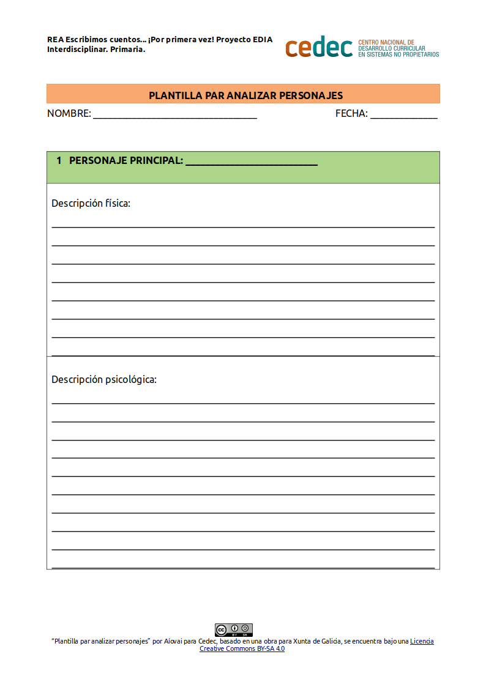

Los personajes
ACTIVIDAD: Creamos personajes
- Duración:
- 60 a 120 min
- Agrupamiento:
- Individual
Individualmente el alumnado definirá el personaje principal. Puede ser del mundo de la fantasía o basado en la realidad. Lo caracterizamos realizando su descripción física y psicológica.
Perfilará los personajes secundarios (dos o tres), siempre susceptibles de aparecer o no, y definirá los trazos psicológicos generales.
- Modelo para la elaboración de la descripción de los personajes
-
Entregamos este modelo al alumnado para la descripción de los personajes, teniendo en cuenta que es posible su adaptación previa por parte de la persona docente con el software LibreOffice Writer.
- Modelo de plantilla para describir personajes (descargar en formato editable odt y en pdf).

- Cómo se hace una descripción
-
La descripción consiste en presentar las partes o los trazos característicos de seres, lugares, objetos o fenómenos, con el fin de que el receptor pueda formarse una imagen fiel de ellos.
La descripción puede ser objetiva o subjetiva.
- OBJETIVA: cuando el emisor se limita a reflejar lo que ve sin manifestar sus sentimientos y empleando un lenguaje riguroso y preciso. Inherente a textos científicos.
- SUBJETIVA: cuando el emisor refleja las opiniones y las emociones que le produce la realidad que describe. Inherente a textos literarios.
Para elaborar una descripción es oportuno seguir los siguientes pasos:
- Observamos con atención la realidad que vamos a describir (aunque se puede describir algo imaginario).
- Seleccionamos lo más importante y descartamos lo que no ofrezca interés.
- Ordenamos de una forma lógica los elementos que previamente seleccionamos. Ej: desde el exterior al interior, de arriba a abajo, de lo general a lo particular, etc.
- Redactamos la descripción utilizando un vocabulario adecuado y preciso, empleando recursos expresivos para destacar las características de lo que se quiere describir.
El adjetivo es una categoría gramatical esencial en los textos literarios porque es lo que expresa las características y los detalles de lo que describimos (colores, formas, tamaños, personas,...).
-
- Adjetivos para describir una persona
-
Relación de adjetivos para describir aspectos físicos:
- CARA: alargada, redonda, angulosa, hermosa, agraciada, fea, agradable, expresiva, radiante...
- OJOS: redondos, rasgados, brillantes, apagados, azules, verdes,...
- MIRADA: triste, melancólica, alegre, vivaz, desafiante, pícara...
- BOCA: fina, gruesa, armoniosa, delicada, grande, labios gruesos, labios finos...
- DIENTES: blancos, oscurecidos, sanos, firmes, picados, manchados, nacarados,...
- NARIZ: aguileña, recta, chata, fina, griega, grande, pequeña, larga...
- CEJAS: arqueadas, oblicuas, rectas, finas, juntas, pobladas,...
- PELO: rizado, lacio, largo, corto, rubio, castaño, cobrizo, canoso, rebelde,...
- CUERPO: delgado, grueso, frágil, robusto, flexible, ágil,...
- BARBA: escasa, suave, recia, poblada, espesa,...
- ESTATURA: baja, mediana, normal, alta,...
- CONSTITUCIÓN: gruesa, corpulento, delgada, recia, débil, atlética, robusta,...
- EDAD: joven, madura, mayor, anciana,...
- VESTUARIO: recargado, elegante escaso, pobre, rico, decoroso, indecoroso...
- MOVIMIENTO: grácil, armonioso, gracioso, saltarín, lento, alegre,...
Relación de adjetivos para describir aspectos psicológicos:
Amable, alegre, simpática, antipático, apasionada, atento, atrevida, trabajadora, atolondrada, educado, ingeniosa, exigente, entusiasta, generosa, huraña, hosca, intratable, estúpida, extravagante, inexpresivo, lista, malhumorado, maliciosa, mentiroso, gruñón, valiente, boba, burlón, despierta, fanática, fanfarrón, feliz, fiel, honrado, lista, chulo, presumida, desvergonzado, miedosa, prudente, mema, zopenca, bruto, majadero, calmosa, confiado, contestataria, cobarde, serio, culta, sincero, bárbara, soez, chiflada, sabiondo, salvaje, sensata, solitario, soso, soñadora, cazurro, decidida, desordenada, divertido, dócil, idiota, ilusa, imbécil, insolente, inteligente, orgullosa, campechano, rebelde, risueña, llorón, triste, tímido, extrovertida...
- Para saber más...
-
- Descripción de personajes 15. Personajes fantásticos [Internet]. [citado 12 de mayo de 2017]. Disponible en: http://alquimistasdelapalabra.com/descripcion/15_personajes_fantasticos/index.html
- Cómo hacer descripciones de personajes - Inteligencia Narrativa [Internet]. [citado 12 de mayo de 2017]. Disponible en: http://www.inteligencianarrativa.com/descripciones-de-personajes/
- Descripciones de personajes: aprende a escribirlas mejor · Sinjania [Internet]. [citado 12 de mayo de 2017]. Disponible en: https://www.sinjania.com/descripciones-de-personajes/
- Cómo escribir una novela: la descripción de personajes I | Literautas [Internet]. [citado 12 de mayo de 2017]. Disponible en: http://www.literautas.com/es/blog/post-6542/como-escribir-una-novela-la-descripcion-de-personajes/
- 10 consejos para describir a tus personajes - Tinta al sol [Internet]. [citado 12 de mayo de 2017]. Disponible en: http://www.tintaalsol.com/2016/10/10-consejos-para-describir-a-tus-personajes
Obra publicada con Licencia Creative Commons Reconocimiento Compartir igual 4.0